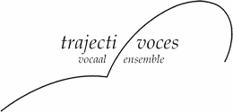
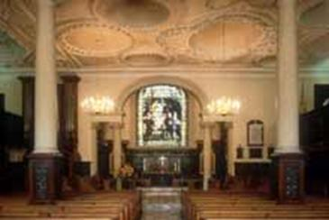

Trajecti Voces
Concertreis naar Engeland
De reiscommissie is volop in de weer met de organisatie van de reis naar Engeland. Naarmate de contacten met Engeland groeien en concrete toezeggingen opleveren, worden wij steeds enthousiaster en krijgen er steeds meer zin in. Met deze nieuwsbrief willen we je informeren over de stand van zaken in de hoop dat het ook bij jou het nodige enthousiasme teweeg zal brengen.
Om concerten te organiseren hebben we een groot aantal kerken en festivals benaderd. In december leek er nog weinig schot te zitten in de reacties maar inmiddels begint het te lopen, zijn er al concrete afspraken en hebben we een behoorlijk aantal opties en zijn mensen enthousiast bezig om iets voor ons te regelen.
Lunchconcert in Holy Trinity Church in Hastings : woensdag 6 juli om 13:10 uur
Deze kerk heeft een lunchconcertserie, waar we deel van gaan uitmaken. Info vind je op: http://www.holytrinitychurchhastings.org/?page_id=22
Middagconcert in Etchingham Music Festival : zondag 10 juli om 16.00 uur
In Etchingham zijn we het afsluitend concert van het festival. Men verwacht veel publiek. We worden gastvrij onthaald met een BBQ! Meer info op: http://www.etchinghammusicfestival.co.uk/index.htm
Lunchconcert in Parish Church of St. Mary in Rye : vrijdag 8 of zaterdag 9 juli
Ons verblijf hebben we dicht bij Rye. Dus dit wordt een ‘thuiswedstrijd’ Het concert heeft een vrije in- en uitloop-aard. We moeten zelf de PR doen, maar de lokale organisatie is bereid affiches en flyers te verspreiden.
Info over de kerk op: http://www.ryeparishchurch.org.uk/6613c646.htm


Kerkje in Etchingham Interieur Holy Trinity Church in Hastings
Verder hebben we veelbelovende contacten in Maidstone (International Maistone Music and Dance Festival) en zijn de dominees in Staplehurst (getrouwd met een Nederlandse! Citaat e-mail: I'm sure we, at Staplehurst, will be delighted to have you), in het mooie plaatsje Biddenden (‘Thank you for your email. It sounds a very interesting programme’) en in Rotherfield (“I have contacted members of the Church Council and we are very happy for your choir to perform’) enthousiast en willen hun best voor ons doen. We verwachten dat hier zeker nog 2 á 3 concerten uit gaan komen. Al met al wordt het dus een mooi programma met concerten.

Zoals het er nu voor staat vertrekken we op maandag 4 juli. De oversteek naar Engeland maken we bij Calais per ferry. We keren terug op zondagavond 10 juli en nemen dan de tunnel bij Folkstone om de reistijd te verkorten en op ene rdelijke tijd in Utrecht te zijn.. We zullen reizen met 2 busjes voor 9 personen (we zijn met 16 zangers +dirigent Dirkjan).
Om binnen de begroting te blijven hebben we besloten de reis met 1 dag te bekorten en niet op zondag 3 juli maar pas op maandag 4 juli te vertrekken. Gaandeweg krijgen we meer zicht op de kosten en verwachten we dat we alles binnen de begroting kunnen realiseren en dat de bijdrage van deelnemers inderdaad de toegezegde € 500,- niet zal overschrijden. Bovendien heeft het bestuur besloten een bedrag van € 1.500,- te reserveren als buffer voor eventuele tegenvallers. Dat kon omdat we 2010 met een behoorlijk positief resultaat hebben afgesloten.


Cottage in Camber Sands Camber Sands
Tot op heden zijn we er niet in geslaagd om betaalbare, gunstig gelegen en zelfcatering accommodatie te vinden waar we met zijn allen in kunnen. Op dit moment gaan de plannen uit naar 5 cottages in Camber Sand dicht bij het strand en niet ver van Hastings. De cottages liggen naast of heel dicht bij elkaar. We zullen ons hier dus over de huisjes moeten verdelen (3 a 4 personen per huisje). We stellen ons al voor hoe de huisjes op toerbeurt voor elkaar gaan koken. Dan wordt het vast nog gezellig! Voor koorrepetities is ons de kerk in Camber (op loopafstand) beschikbaar gesteld. Mogelijk geven we als tegenprestatie nog een lunchconcert in deze kerk.
Trajecti Voces
Concertreis naar Engeland
Alweer de tweede nieuwsbrief. Om jullie op de hoogte te houden van de vorderingen..
Het programma van concerten is bijna rond. Het concert in Maidstone gaat niet door. Het aanbod om samen met 7 andere koren een concert te geven (15 minuten tijd voor ons) hebben we beleefd afgeslagen. Contacten in Royal Tunbridge Wells kwamen echter in een stroomversnelling en inmiddels boekten we daar een concert. De ‘Director of Music’ aldaar, Rupert Preston-Bell (zelf een koorzanger) is enthousiast. Op zijn inzet kunnen we rekenen! (citaat mail: ‘I am very excited that you will be coming to do your concert on 9th July. There are many choirs in the area and we will try to encourage people to come and hear you.’)
Het globale programma van de reis (bijna definitief) is als volgt:
Maandag 4 juli 2011
8:30 ` vertrek uit Utrecht
15:30 aankomst accommodatie in Camber
20:00-22:00 repetitie
Dinsdag 5 juli
10:00-12:00 repetitie
12:45-13:30 lunchconcert in in Camber; St.Thomas Church (onze repetitieruimte)
Woensdag 6 juli
11:00-12:00 repetitie in Hastings
13:10-13:50 lunchconcert in Hastings; Holy Trinity Church
Donderdag 7 juli
Vrije dag
Vrijdag 8 juli
16:00-17:30 repetitie in Staplehurst
20:00-22:00 concert in Staplehurst; All Saints Church
Zaterdag 9 juli
16:00-17:30 repetitie in Royal Tunbridge Wells
20:00-22:00 concert in Royal Tunbridge Wells; King Charles the Martyr Church
Zondag 10 juli
14:00-15:00 repetitie in Etchingham
16:00-18:00 concert in Etchingham; slotconcert van Etchingham Music Festival
18:15 vertrek uit Etchingham
02:00 aankomst in Utrecht
Alleen het concert in Staplehurst is nog niet definitief.
Uiteraard gaan we voor de vrije momenten een leuk programma bedenken.

Interieur King Charles the Martyr in Royal Tunbridge Wells
In samenspraak met de programmacommissie heeft Dirkjan inmiddels een programma voor het zomerproject en de concertreis gemaakt. Hij omschrijft het als volgt:
‘’Trajecti Voces will perform a programme of great variety, consisting of Dutch and English a cappella music spanning four centuries. It starts off with music of the Elizabethan composers Peter Philips, William Byrd and John Bull, and their Dutch contemporaries Jan Pieterszoon Sweelinck and Cornelis Thymanszoon Padbrué. English romantic part songs by Elgar, Parry and Stanford interact with works by Hendrik Andriessen and his son Jurriaan. English contemporary composer Gabriel Jackson meets leading Dutch composer Ton de Leeuw. The concert culminates in arrangements of English and Dutch folk songs by Vaughan Williams and Jetse Bremer.’’
Hendrik Andriessen en zijn zoon Jurriaan
WE willen naar Engeland met een bezetting van 4 x 4. Deze bezetting is nog niet helemaal rond. Er zijn nog vacatures voor een sopraan, een alt en een (lage) bas. Het wordt wel tijd om deze vacatures ingevuld te krijgen. Wil je ons helpen door zangers in je omgeving te interesseren voor deelname aan de concertreis? Samen moet het ons lukken een complete bezetting op de been te krijgen.
De huidige bezetting is als volgt:
Sopranen: Vivien Hargreaves, Marja Jager, Nicolle Maessen, vacature
Alten: Marie-Bé Clabaut, Frederike Bruijn, Tooske Buurman, vacature
Tenoren: Niels Kortleve, Christiaan Mak, Maarten van Oostrom, Han Hoes
Bassen: Lennart Turlings, Piet Jansen van Roosendaal, Jan van den Berg, vacature
In overleg met Dirkjan heft het bestuur intussen besloten dat ook zangers die niet meegaan naar Engeland, aan het project deel kunnen nemen. Dit o.a. om vaste kernzangers en trouwe projectzangers, die niet meegaan naar Engeland, ook in de zomermaanden iets te kunnen bieden. Op 18 juni sluiten we het project met deze ‘extra-zangers’ af met een concert in Utrecht. Daarna hebben we nog twee repetities met het reiskoor alvorens we naar Engeland vertrekken.
Het plan om de repetitiedag en try-out concert in Houten te doen, waardoor ons try-out concert onderdeel kon uitmaken van de week van de amateurkunst, is helaas van de baan. De organisatie in Houten had geen tijd e.e.a. voor ons te regelen. Jammer!
Het repetitieschema voor het zomerproject is als volgt:
5-apr-11 repetitie
12-apr-11 ALV
19-apr-11 repetitie (vervanger)
26-apr-11 repetitie
3-mei-11 vakantie
10-mei-11 repetitie
17-mei-11 repetitie
22-mei-11 repetitiedag & try-out
24-mei-11 repetitie
31-mei-11 repetitie
7-jun-11 repetitie
14-jun-11 reserverepetitie
16-jun-11 generale
18-jun-11 concert Utrecht
21-jun-11 repetitie met 'reiskoor'
28-jun-11 repetitie met 'reiskoor'
Voor het vervoer hebben we inmiddels twee 9 persoonsbussen gereserveerd. Het zijn bussen van het ‘verlengde type’ met royaal voldoende ruimte voor bagage (hebben de normale 9 persoonsbussen niet). En dat allemaal binnen het budget. We zijn er trots op!
Vervoer met bussen bleek ruim goedkoper dan met eigen auto’s. Het scheelt aanzienlijk in brandstof en kosten van de overtocht over het Kanaal. En natuurlijk is het ook veel gezelliger!